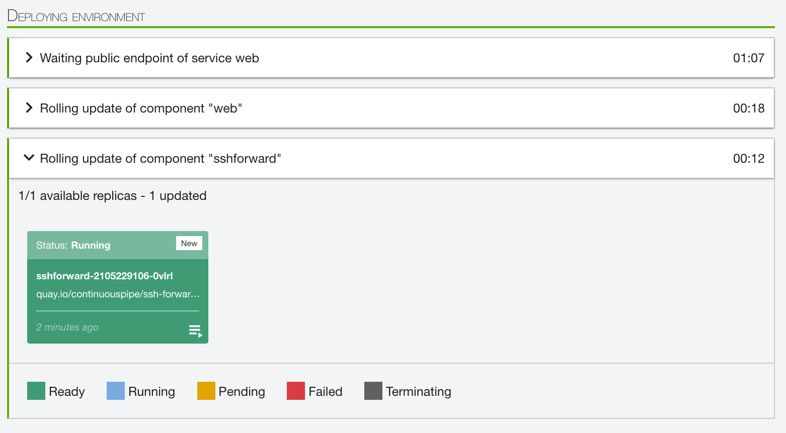

Setting up Xdebug on a Remote Environment
Introduction
This is a guide to setting up Xdebug on a ContinuousPipe remote environment.
Prerequisites
Before getting started you will need to have read or understand the following:
- Basic Xdebug setup and usage - see https://www.sitepoint.com/debugging-and-profiling-php-with-xdebug
- Setting up an environment in ContinuousPipe - see the quick start guide
- Setting up a remote development environment in ContinuousPipe - see the remote development quick start guide
In addition, we are going to use the ContinuousPipe Symfony demo app, so reading the getting started with Symfony guide will help too.
Configuring Your Repository
As mentioned above, this guide will use the ContinuousPipe Symfony demo app. The files that are modified below can be found in the ContinuousPipe demo-symfony repository.
Below is a summary of the files that will be modified (M) or added (A) to configure the repository:
.
M ├── Dockerfile
M ├── continuous-pipe.yml
M ├── docker-compose.yml
└── docker/
└── etc/
└── php/
└── 7.1/
└── fpm/
└── conf.d/
A └── 20-xdebug.ini
Installing Xdebug
The first step is to install Xdebug on the remote environment. This can be done by adding the following instructions to the Dockerfile:
Dockerfile
- Lines 6-9: The RUN instruction tells Docker to install the
php-xdebugmodule on the image usingapt-get. - Line 11: Then the COPY instruction tells Docker to copy files from
docker/etc/in the repository to/etcon the image filesystem.
As you can see, the COPY instruction expects the Xdebug configuration to be present in the repository, in this case under the docker/etc/ directory.
Note
The exact location of the configuration will depend on the image you are using. For the quay.io/continuouspipe/symfony-php7.1-nginx ContinuousPipe image the Xdebug configuration file is at “/etc/php/7.1/fpm/conf.d/20-xdebug.ini”, however you may need to change this path according to your PHP version.
The following file therefore needs to be created in the repository at “docker/etc/php/7.1/fpm/conf.d/20-xdebug.ini”:
20-xdebug.ini
zend_extension=xdebug.so xdebug.remote_enable=1 xdebug.remote_port=9000 xdebug.remote_host=sshforward xdebug.remote_log=
This will enable remote debugging on port 9000, using the “sshforward” host. Details on setting up the “sshforward” host are in the next section of the guide.
Note
With the instructions above Xdebug is always set up irrespective of environment. Instructions on how to make this conditional on the environment can be found in Appendix B.
Note
If you are using a ContinuousPipe base image you will also need to disable Tideways. This is necessary as Tideways loads an auto prepend file, which means the Xdebug client mistakes it for the application entry point.
Basic instructions on how to disable Tideways can be found in Appendix C. If you have followed the instructions in Appendix B please refer to Appendix D instead.
Installing SSH Forward
The next step is to configure your project to use the ContinuousPipe SSH Forward image. This is needed to allow port forwarding to be set up from your local machine to the pod your environment is running on.
The docker-compose.yml file needs editing as follows:
docker-compose.yml
- Lines 3-4: A new service
sshforwardis added, specifying the “quay.io/continuouspipe/ssh-forward” image. - Lines 15-16: The
sshforwardservice is declared as a dependency of thewebservice.
The continuous-pipe.yml file needs editing as follows:
continuous-pipe.yml
- Line 18: A new service
sshforwardis added. - Line 19: A condition restricts the service to deployments for remote development branches i.e. branches that start with the string “cpdev”.
- Lines 21-22: The service will use port 9000.
- Lines 23-24: A password for the service is specified by passing in the enviromental variable
SSH_FORWARD_PASSWORD. This references a YAML variable, also calledSSH_FORWARD_PASSWORD- this needs setting as a variable in the ContinuousPipe console, as explained in configuring a flow. Additionally, it need to be encrypted. This can be done by clicking the padlock icon when entering the values into the flow configuration, before saving.
Note
The password you set will be needed later when running the port forwarding command from a terminal.
Note
The specification has no accessibility section, so will only be accessible from within the cluster i.e. it deliberately has no external IP address.
Committing Modifications
Permanent Repository Modification
If you are permanently modifying your repository configuration to support Xdebug, the file changes now need to be committed and pushed. You will then need to make sure that your local working branch contains the permanent changes.
Temporary Repository Modification
If you are temporarily modifying your repository configuration to support Xdebug, the file changes must at a minimum be committed locally on your working branch.
Creating a Remote Development Environment
You now need to set up a remote development environment using the ContinuousPipe console. See the remote development quick start guide for instructions on how to do this.
Note
If you have already built a remote environment, you will need to rebuild it using cp-remote build to ensure that the latest configuration changes are present.
If you review the tide progress for the new environment, you should see that the “sshforward” pod has been created:

You should also be able verify the environment using the cp-remote pods command:
> cp-remote pods
checking connection for environment sfdemo-cpdev-pswaine
2 pods have been found:
NAMESPACE NAME READY STATUS RESTARTS AGE IP NODE
sfdemo-cpdev-pswaine sshforward-2105229106-0vlrl 1/1 Running 0 10m 10.0.0.112 gke-cp-internal-pool-4cpu-15gb-878b5c33-pnr8
sfdemo-cpdev-pswaine web-367352278-hrh65 1/1 Running 0 10m 10.0.4.134 gke-cp-internal-pool-4cpu-15gb-878b5c33-cf1q
Setting Up Port Forwarding
You can now set up port forwarding between your local machine and the remote environment as follows:
> cp-remote forward -s sshforward 2222:22 2>&1 > /dev/null &
[1] 38242
Here we use cp-remote to forward the local port 2222 to port 22 on the remote “sshforward” pod. The command is run as a background process.
You can now use ssh over port 2222 to set up an ssh tunnel:
> ssh -p 2222 forward@localhost -N -R 9000:localhost:9000
The authenticity of host '[localhost]:2222 ([::1]:2222)' can't be established.
ECDSA key fingerprint is SHA256:*******************************************.
Are you sure you want to continue connecting (yes/no)? yes
Warning: Permanently added '[localhost]:2222' (ECDSA) to the list of known hosts.
forward@localhost's password:
Here we connect to the “sshforward” pod using port 2222, then use the “forward” user to create a tunnel beween port 9000 on the local machine and port 9000 on the remote environment. The “forward” user was created when the “sshforward” service was deployed, with the password set to the value configured in the flow (as described above). As you can see, this password now needs to be entered into the terminal to permit the tunnel to be set up.
Using Xdebug
Note
This section is deliberately brief, as the process of using an Xdebug client is nearly the same using a remote environment as when your code is running locally.
At this point you should be able to initiate Xdebug debugging in your application, as if the code on the remote environment was on your local machine. You will need to ensure that your browser is configured to trigger remote Xdebug sessions (usually using a plugin) and that your IDE is configured to listen on port 9000 for incoming connections.
Appendix A: Troubleshooting
The Sshforward Service Is Not Installed
If the “sshforward” service is not installed, check that environment was built using a branch starting with “cpdev”.
Xdebug Is Installed but Not Configured
Xdebug needs to have the following settings configured:
| Setting | Value |
|---|---|
| xdebug.remote_enable | 1 |
| xdebug.remote_port | 9000 |
| xdebug.remote_host | sshforward |
If these are not set, ensure that the Xdebug ini has been deployed sucessfully:
> cp-remote exec -s web -- ls -la /etc/php/7.1/fpm/conf.d/20-xdebug.ini
-rw-rw-r-- 3 root root 102 May 8 10:51 /etc/php/7.1/fpm/conf.d/20-xdebug.ini
- If the ini has not been deployed, check that the path is correct in your local repository.
- If you are using a different base image, you may need to change the path of the Xdebug ini.
Xdebug Is Connecting But Hanging Up Immediately
To debug this issue, you will need to enable Xdebug logging on your container. You can do this by running cp-remote bash -s web and editing “/etc/php/7.1/fpm/conf.d/20-xdebug.ini” to add the setting “xdebug.remote_log=/tmp/xdebug.log”. You will then need to restart php-fpm using service php7.1-fpm restart. You can then review Xdebug activity for subsequent requests by tailing the contents of the file “/tmp/xdebug.log”.
Sometimes you will see the following:
I: Connecting to configured address/port: sshforward:9000.
I: Connected to client. :-)
-> <init xmlns="urn:debugger_protocol_v1" xmlns:xdebug="http://xdebug.org/dbgp/xdebug" fileuri="file:///app/web/app.php" language="PHP" xdebug:language_version="7.0.4-5ubuntu1" protocol_version="1.0" appid="389" idekey="markross"><engine version="2.4.0"><![CDATA[Xdebug]]></engine><author><![CDATA[Derick Rethans]]></author><url><![CDATA[http://xdebug.org]]></url><copyright><![CDATA[Copyright (c) 2002-2016 by Derick Rethans]]></copyright></init>
-> <response xmlns="urn:debugger_protocol_v1" xmlns:xdebug="http://xdebug.org/dbgp/xdebug" status="stopping" reason="ok"></response>
Log closed at 2017-05-12 10:04:32
This means that Xdebug is connecting to port 9000 on your local machine, but not getting the correct response so the session is immediately terminated. You can debug this by checking what is listening on port 9000 on your local machine using the command lsof -n -i:9000.
In the following example we see that nothing is listening on port 9000 - so the Xdebug client configuration needs checking:
> lsof -n -i:9000
>
In the following example we see that a local version of php-fpm is listening on that port - so local PHP will need to be reconfigured:
> lsof -n -i:9000
COMMAND PID USER FD TYPE DEVICE SIZE/OFF NODE NAME
php-fpm 15159 username 6u IPv4 0x1d2a0f6d7ef000d5 0t0 TCP 127.0.0.1:cslistener (LISTEN)
Ultimately you want to see your Xdebug client (here PhpStorm) in the output of the command:
> lsof -n -i:9000
COMMAND PID USER FD TYPE DEVICE SIZE/OFF NODE NAME
phpstorm 71963 username 40u IPv4 0x725301cef22311b5 0t0 TCP *:cslistener (LISTEN)
Path Mapping
One problem you may encounter is that your IDE does not know how to map local file paths with remote file paths. If you are using PhpStorm this issue is resolved by setting up a path mapping.
Appendix B: Making the PHP Extension Configuration Conditional
One problem you may have noticed with the instructions above is that Xdebug is always set up and Tideways is always disabled, irrespective of environment. Assuming that you are using one of the ContinuousPipe images, you can make the configuration for these extensions conditional using confd.
Using confd, the single configuration file for each extension is replaced with two separate files:
- A TOML file that describes a template file, output destination, permissions etc.
- A template file that can render different output dependent upon environment variables.
When COPY docker/etc/ /etc/ is run in the Dockerfile the TOML files are processed and template content rendered.
Below is a summary of the files that will be modified (M), added (A) or deleted (D) to update the repository configuration to support confd conditional templates:
.
├── Dockerfile
M ├── continuous-pipe.yml
├── docker-compose.yml
└── docker/
└── etc/
└── confd/
└── conf.d/
└── fpm/
A └── php-fpm-xdebug.conf.toml
└── templates/
└── php-fpm/
A └── xdebug.conf.tmpl
└── php/
└── 7.1/
└── fpm/
└── conf.d/
D ├── 20-xdebug.ini
As you can see, the file “docker/etc/php/7.1/fpm/conf.d/20-xdebug.ini” created earlier need to be deleted.
In its place, the following files need to be created at “docker/etc/confd/conf.d/php-fpm-xdebug.conf.toml” and “docker/etc/confd/templates/php-fpm/xdebug.conf.tmpl” respectively:
php-fpm-xdebug.conf.toml
[template] src = "php-fpm/xdebug.conf.tmpl" dest = "/etc/php/7.1/fpm/conf.d/20-xdebug.ini" mode = "0644" keys = [ ]xdebug.conf.tmpl
{{ if getenv "XDEBUG_REMOTE_ENABLED" }} zend_extension=xdebug.so xdebug.remote_enable={{ getenv "XDEBUG_REMOTE_ENABLED" }} xdebug.remote_host={{ getenv "XDEBUG_REMOTE_HOST" }} xdebug.remote_port={{ getenv "XDEBUG_REMOTE_PORT" }} xdebug.remote_log= {{ else }} ;zend_extension=xdebug.so {{ end }}
As you can see, the TOML file configures a template to use and the output destination. The template file looks for the environment variable of XDEBUG_REMOTE_ENABLED before outputting an enabled Xdebug configuration, otherwise it outputs a disabled Xdebug configuration. The three XDEBUG_REMOTE_* environment variables used in the template are explained below when continuous-pipe.yml is modified.
In order to actually set the three XDEBUG_REMOTE_* environment variables, continuous-pipe.yml needs modifying as follows.
continuous-pipe.yml
- Lines 4-10: Three YAML variables
XDEBUG_REMOTE_ENABLED,XDEBUG_REMOTE_HOSTandXDEBUG_REMOTE_PORTare declared with empty values. - Lines 38-43: The three YAML variables are set as environmental variables with the same respective name.
- Lines 58-63: The three YAML variables are set/populated when the Remote pipeline is used (which is when the branch name begins with “cpdev*“).
Appendix C: Disabling Tideways - Basic Configuration Using Copy
If you are using a ContinuousPipe base image you will also need to disable Tideways. This is necessary as Tideways loads an auto prepend file, which means the Xdebug client mistakes it for the application entry point.
This appendix contains the instructions to disable Tideways following the basic copy configuration strategy in the main body of this guide.
Below is a summary of the file that will be added (A) to update the repository configuration:
.
├── Dockerfile
├── continuous-pipe.yml
├── docker-compose.yml
└── docker/
└── etc/
└── php/
└── 7.1/
└── fpm/
└── conf.d/
├── 20-xdebug.ini
A └── 40-tideways.ini
You will need to create the following file in the repository at “docker/etc/php/7.1/fpm/conf.d/40-tideways.ini”:
40-tideways.ini
;extension=tideways.so
This very simply disables the Tideways extension by commenting it out.
Appendix D: Disabling Tideways - Advanced Configuration Using Confd
If you are using a ContinuousPipe base image you will also need to disable Tideways. This is necessary as Tideways loads an auto prepend file, which means the Xdebug client mistakes it for the application entry point.
This appendix contains the instructions to disable Tideways following the confd configuration strategy in Appendix B.
Below is a summary of the files that will be added (A) or deleted (D) to update the repository configuration:
.
├── Dockerfile
├── continuous-pipe.yml
├── docker-compose.yml
└── docker/
└── etc/
└── confd/
└── conf.d/
└── fpm/
A ├── php-fpm-tideways.conf.toml
└── php-fpm-xdebug.conf.toml
└── templates/
└── php-fpm/
A ├── tideways.conf.tmpl
└── xdebug.conf.tmpl
└── php/
└── 7.1/
└── fpm/
└── conf.d/
├── 20-xdebug.ini
D └── 40-tideways.ini
The the following files need to be created at “docker/etc/confd/conf.d/php-fpm-tideways.conf.toml” and “docker/etc/confd/templates/php-fpm/tideways.conf.tmpl” respectively:
php-fpm-tideways.conf.toml
[template] src = "php-fpm/tideways.conf.tmpl" dest = "/etc/php/7.1/fpm/conf.d/40-tideways.ini" mode = "0644" keys = [ ]tideways.conf.tmpl
{{ if getenv "XDEBUG_REMOTE_ENABLED" }} ;extension=tideways.so {{ else }} ; Configuration for Tideways Profiler Extension ; priority=40 extension=tideways.so ; Tideways Application API-Key to configure when using just one application on ; this php installation. ;tideways.api_key= ; Configure the profiling sample rate for this PHP server globally. The given ; number is an integer representing percent between 0 and 100 tideways.sample_rate=25 ; Automatically detect transactions and exceptions of a given framework The ; following frameworks are currently supported: ; ; symfony2, symfony2c, shopware, oxid, magento, zend1, zend2, laravel, ; wordpress ;tideways.framework= {{ end }}
As you can see, the confd setup for Tideways follows very similar logic to the confd setup for Xdebug. However, the process is reversed, with a disabled Tideways configuration being outputted if XDEBUG_REMOTE_ENABLED is found, otherwise the default Tideways configuration is outputted.